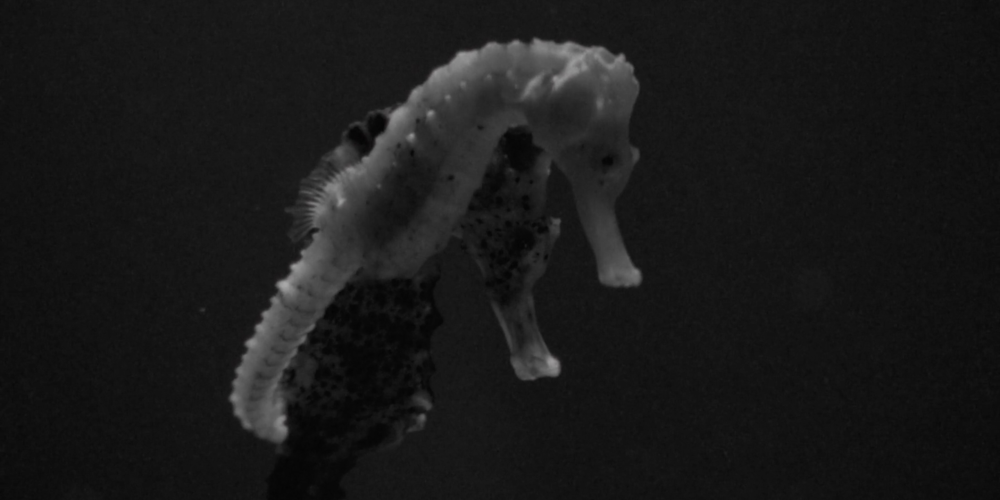
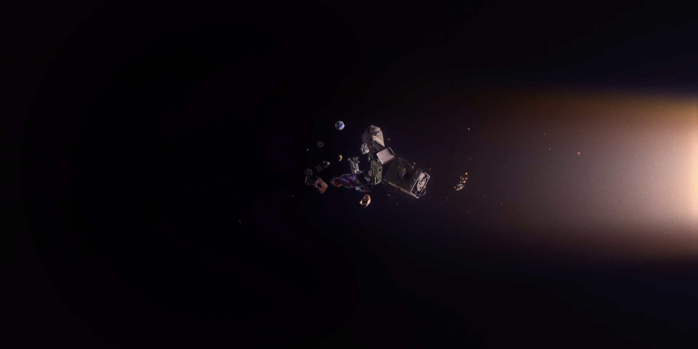
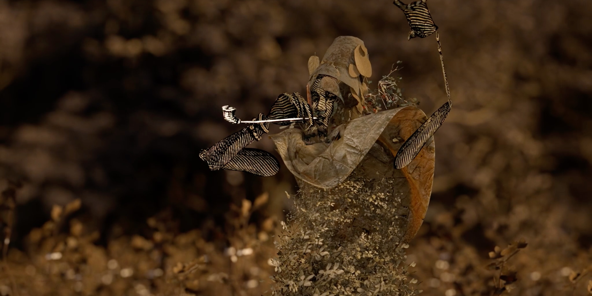
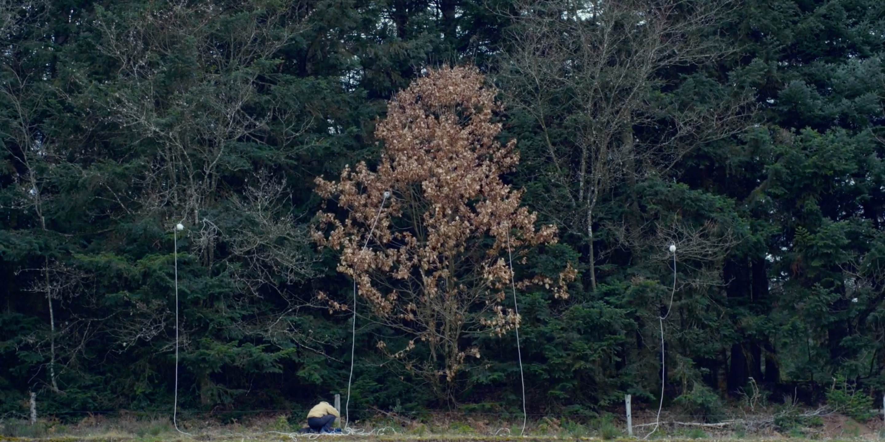

©2024 Nicolás Gómez Salamanca
Nicolás Gómez Salamanca is a Colombian musician based in Saint-Étienne, France. He holds a Master's degree in Contemporary Creation with New Technologies from Jean Monnet University in France and has studied Music Production at the University of Los Andes in Colombia. His artistic focus lies in combining his technical and musical background with his passion for exploring art through new technologies.
Professionally, he works as a sound designer and sound editor for film, contributing to the audio production of movies, short films, and advertising. He has worked at Le Fresnoy in Tourcoing, France, a prestigious school for artistic, audiovisual, and digital training, production, and dissemination. In 2022, he was awarded the Silver Prize for Best Acoustic Recording at the AES LAC 2022 competition, organized by the Audio Engineering Society (AES) in Buenos Aires, Argentina. Additionally, Nicolás is an active violinist.

A man who experiences amnesia finds himself in a mysterious Sleep & Memory lab where a young doctor tries to cure him through a magical water.
Sound Editors: Nicolás Gómez Salamanca, Luc Aureille
Director: Nicola Baratto
Production: Le Fresnoy, Studio national des arts contemporains
2024



An ancient baryonic compression wave suddenly cuts through the matter and time of present-day space, causing strange material disturbances in its path.
Sound Editors: Raphaël Zucconi, Robin Touchard
Sound Edition Assistant: Nicolás Gómez Salamanca
Director: Robin Touchard
Production: Le Fresnoy, Studio national des arts contemporains
2024



In the early 19th century, Jacques François Roger built a castle in Senegal and developed the fields of an experimental farm around it. The madness of a dream of conquest and domination intertwined with a conception of agriculture as a strategy of occupation. The farm became a fort, and the place of conflicts between settlers and chiefs of the Waalo kingdom, until the colonization of Senegal. Despite occupation, the plants, the Waalo and the soil resist.
Sound Editors: Nicolás Gómez Salamanca, Benjamin Poilane
Director: Nicolas Pirus
Production: Le Fresnoy, Studio national des arts contemporains
2024


Sound Editor: Nicolás Gómez Salamanca
Sound Design: André Serre Milan
Sound Design Assistant: Nicolás Gómez Salamanca
Director: Nefeli Papadimouli
Production: Le Fresnoy, Studio national des arts contemporains
2024


Antonio has left the group of friends he grew up with in Seine-Saint-Denis. Using the exquisite cadaver principle, several of his friends successively invent the twists and turns of a tale in which a strange illness plunges him into a coma.
Sound Editors: Nicolás Gómez Salamanca, Benjamin Poilane
Director: Lucas Mesdom
Production: Le Fresnoy, Studio national des arts contemporains
2024


An influencer glorifies the legend of Theremespare. A young queer artist chases it through layers of illusions and fantasies.
Sound Editors: Nicolás Gómez Salamanca, Clément Decaudin
Director: Hantédemos
Production: Le Fresnoy, Studio national des arts contemporains
2024


A newcomer to Paris finds a tender voice on a dating app for their road trip to Nice, with the same Mandarin sound as Ness, wishing to see the monster in error.
Sound Mix: Martin Delzescaux
Sound Assistant: Nicolás Gómez Salamanca
Director: Bohao Liu
Production: Le Fresnoy, Studio national des arts contemporains
2024



In industrial forests, a group of female sound recordists is playing back the songs of birds. Seeking to bring the microphone to the living beings that remain, they try to reactivate damaged soundscapes.
Sound Editor: Mélia Roger
Sound Assistant: Nicolás Gómez Salamanca
Director: Mélia Roger
Production: Le Fresnoy, Studio national des arts contemporains
2024


Every day, thousands of people choose to remove their content from social media. YouTube, in particular, is home to a large number of ephemeral amateur videos in which people express themselves about their daily lives. Given the loss of control over our personal data online, these network-quitters may have found a solution.
Sound Supervisor: Raphaël Zucconi
Sound Assistant: Nicolás Gómez Salamanca
Director: Félix Cote
Production: Le Fresnoy, Studio national des arts contemporains
2024


Two lifelong friends grow up with the shared dream of becoming cosmonauts. They easily pass the many physical tests they take during their cosmonaut training, and they even attempt to simulate the feel of flying through space by bouncing on their beds. They are ultimately selected for the next mission, with 1203 being launched solo and 1204 standing by as the reserve cosmonaut. The launch at first goes smoothly, but communication with the ship is soon lost; it is implied that 1203 dies in the vacuum of space. Inconsolable with grief, 1204 refuses to take off his spacesuit; an X-ray shows him curled up in a fetal position in the torso. Eventually, medical staff saw his helmet off, but find the suit empty except for a photo of the two friends in their spacesuits. They then look up to see a hole shaped like 1204's body in the ceiling above his bed, and 1204 is shown drifting suitless through space, where the still-suited 1203 grabs him by the arm.
Complete resonorization: Nicolás Gómez Salamanca
Director: Konstantin Bronzit
2022
Sound Design: Nicolás Gómez Salamanca, Daniela Gutiérrez
Music Composition: Nicolás Gómez Salamanca, Daniela Gutiérrez
Director: Orly Lovett
2023
Itinéraire musical is a musical project in which the artist combines the acoustic richness of the violin with a deep dialogue with natural species, aiming to revive and reflect on spaces previously inhabited by the composer. This project is a sonic exploration in the Colombian jungle, a space that becomes a stage for encounters and communication between the birds that inhabit it and the performer.
Through the imitation and transformation of bird songs, the performer not only generates a dialogue with the other species in the environment but also transforms and rearranges them at will. It is the performer who controls all the natural elements that are part of the composition, such as bird songs, rain, rivers, day, or night.
This composition seeks to celebrate the biodiversity and spirituality of the Colombian jungle while also inviting the audience to reflect on the impact of human intervention in these ecosystems.
This is a composition created and performed by Nicolás GÓMEZ SALAMANCA, written to be controlled using a violin and a MIDI keyboard, and played through an octophonic system via a computer using MAXMSP.
Music Composition: Nicolás Gómez Salamanca
Violin Player: Nicolás Gómez Salamanca
Production: Festival Variations Numériques, Université Jean Monnet
2024
The Eye is a digital instrument primarily controlled by a photosensitive sensor, which represents the eye's retina. When light approaches or moves away from the sensor, it alters the instrument's frequencies and the LFO. In addition to the photosensitive sensor, it has three other controls: a piezoelectric sensor that changes the sound depending on the pressure applied to it, and two additional controllers that also influence various aspects of the sound.
This instrument is based on a Teensy board, programmed through MaxMSP. With this instrument, I aimed to explore unconventional elements for musical creation, such as light and the piezoelectric sensor that measures the force with which it is pressed.